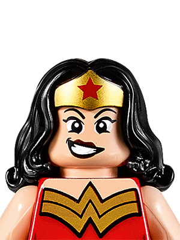
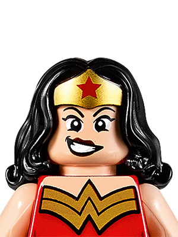

WHO ARE THE LEAGUE OF HEROES?
The League of Heroes is a band of Earth's mightiest costumed superheroes, who use their superpowers for good, fighting evil in all its forms.
The League was founded in Toronto, Canada, by Dr. Goliath and his belief that he could make a better world, and that the law abiding public deserve more.
Since our debut on the world stage in 2015, we have established ourselves as the first and foremost superhero team.
HOW IT ALL BEGAN
In September 2014, Dr. Goliath left his position as a senior webmaster at Seneca College and dedicated himself to full time crime fighting.
He gathered a team of people with the skills and temperament to make the venture a success.The League's first year was spent consolidating funding, acquiring expertise and equipment, as well as constructing the Fortress of Justice.
CHRONOLOGY OF LEAGUE
2015
- February: The League of Heroes was revealed to the public amid thunderous applause, after successfully stopping a series of bank heists.
2016
- January: Business plan is completed.
- August: Toronto publicist Nerdly McNerderson is hired.
- September: The United Nations recognize the League of Heroes as a global source for good.
2017
- September: A new class or recruits began testing their powers for membership - Only the finest will get membership!
OUR TEAM
We are the world's most powerful collection of crime fighters, and have been acknowledged by villains as "the biggest problem to world domination we've ever seen" - (Electo).
We exist to make the world a better place to live, and believe that the best way to do it is in tights and a cape!

Dr. Goliath
Although he had been a part time hero for more than 25 years, it was only during the early 2000s that Dr. Goliath began to seriously consider going full-time.

Brainio
Brainio, the English super-genius was hired to develop the Fortress of Justice - a large building capable of housing the team, and making it the de-facto source for world justice.

Ellen QWERTY
Ellen QWERTY, a biologist who trained as a beer brewmaster, worked tirelessly with Dr. Goliath and Brainio to establish the League's reputation for justice.
Tricolops
The Leagues seventh member, Tricolops, joined last year and boasts 3 laser projecting eye cannons. His distinctive costume and loud war cry set him apart from other heroes, gaining him an instant following.

C.L.A.M.P.
Keep watching the skies this summer - The League will be introducing our latest hero C.L.A.M.P.
Our founder, Dr. Goliath, has been instrumental in collecting heroes from around the world including Shriek, Ironjaw, Power-Maiden, Tom from Accounting, and the mysterious Shroud.
 
